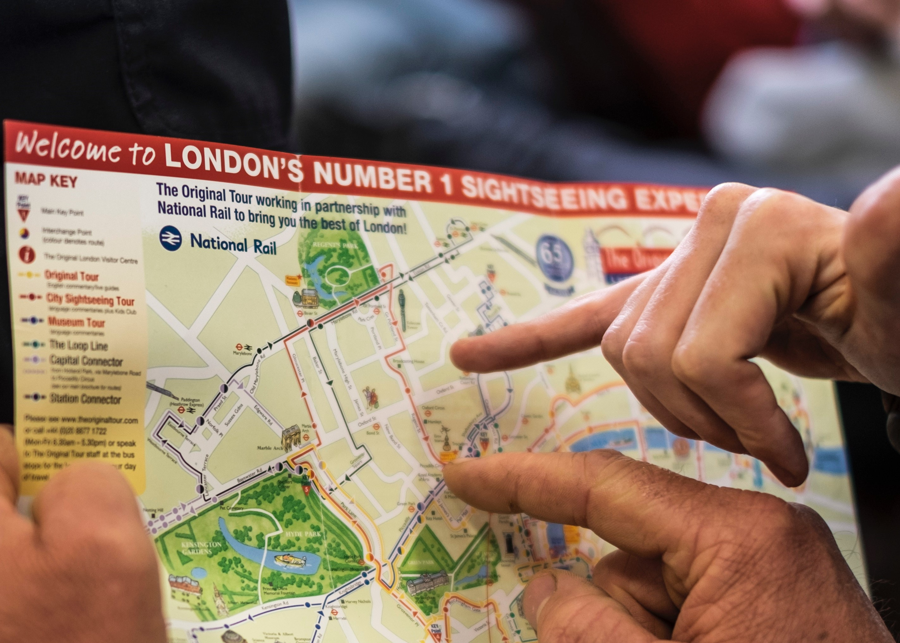
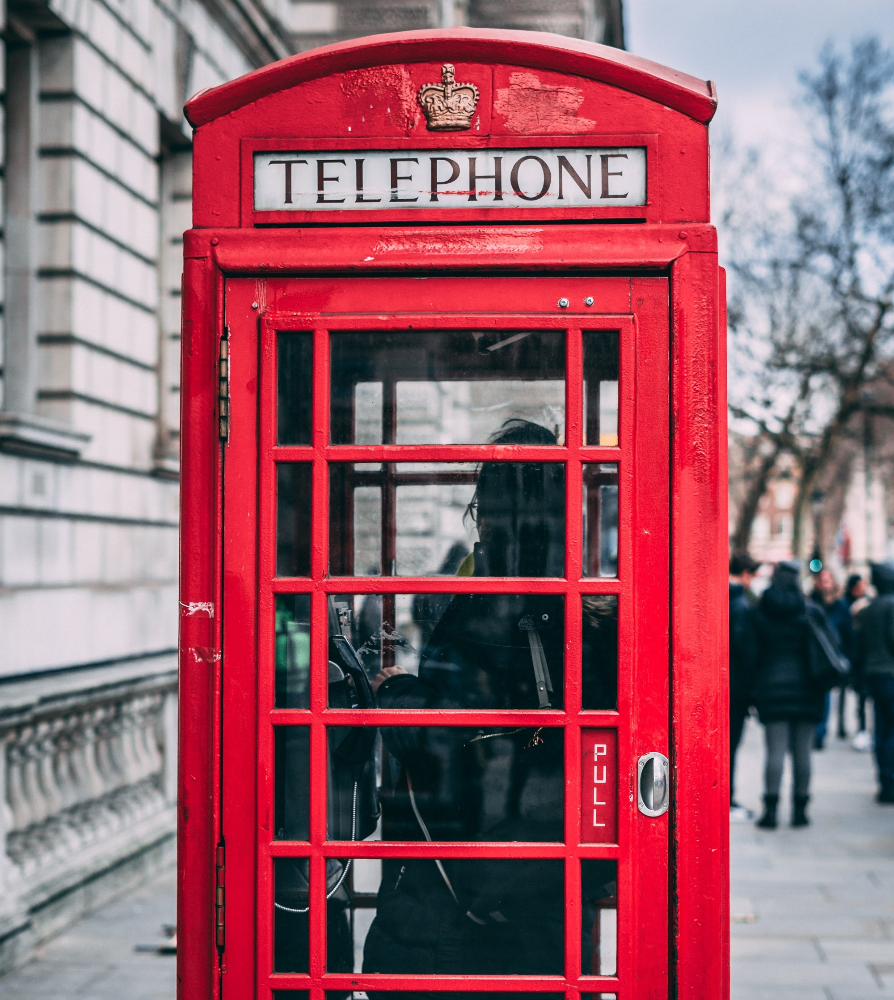
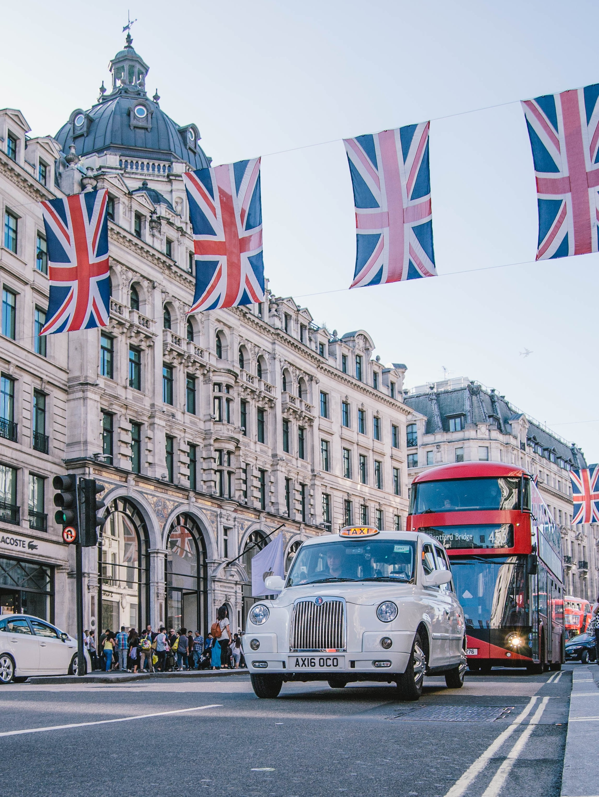
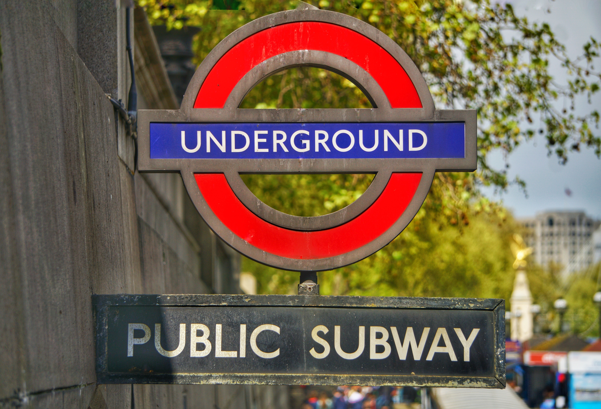

Visit a city today.
From the Tower of London, Big Ben and Westminster Abbey, many of London’s icons are the most recognizable in the world. The English capital is also one of the world’s most visited cities and attracts millions of people around the year. Visitors are drawn to London’s rich history, fine foods and unbeatable cultural life.
Find hotels in central London with our comprehensive guide featuring listings and reviews. There is something for all tastes and budgets, whether cheap accommodation or luxury five-star or boutique hotels, chain hotels, family friendly hotels, traditional London hideaways or specialist accommodation. Have a look at the deals on offer and book your hotel room now!
Exploring London in 3 days would allow you to see its major landmarks and attractions in a pleasant pace. Visit beautiful churches such as St. Paul's Cathedral along with some of the more important museums of Western Europe such as the National Gallery and the British Museum. Learn about the history of our planet in the Museum of Natural History and take some rest in one of the pleasant parks. We can make a 3 days plan for you.
Houses of Parliament and Big Ben. The building widely referred to as the Houses of Parliament is actually called The Palace of Westminster. It is located on the banks of the River Thames and is the place where Britain's House of Lords and House of Commons convene.
Buckingham Palace is the official residence of the British monarch, Queen Elizabeth II; it is used for official events, State occasions and ceremonies by the Royal Family. The palace is conveniently located close to central London and accessible by the London underground. The palace is surrounded by public Royal Parks: Green Park, St. James Park and Hyde Park.
Westminster Abbey is the religious edifice where royal British coronations and burials are held, it is officially a place of worship owned by the royal family.The building is famed for its medieval architecture and features like the coronation throne. In the Abbey you can see the Poet's Corner where the likes of William Shakespeare, Charles Dickens and Geoffrey Chaucer are buried. Among the royals entombed here are Queen Elizabeth I, Queen Mary and King Henry III.